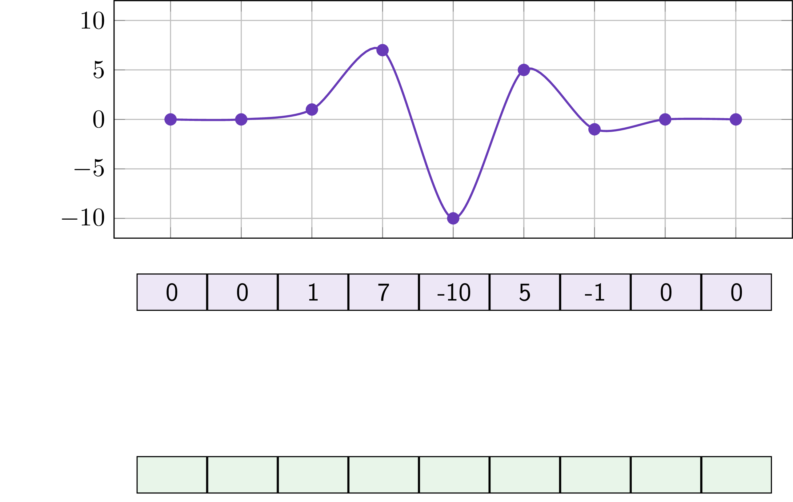
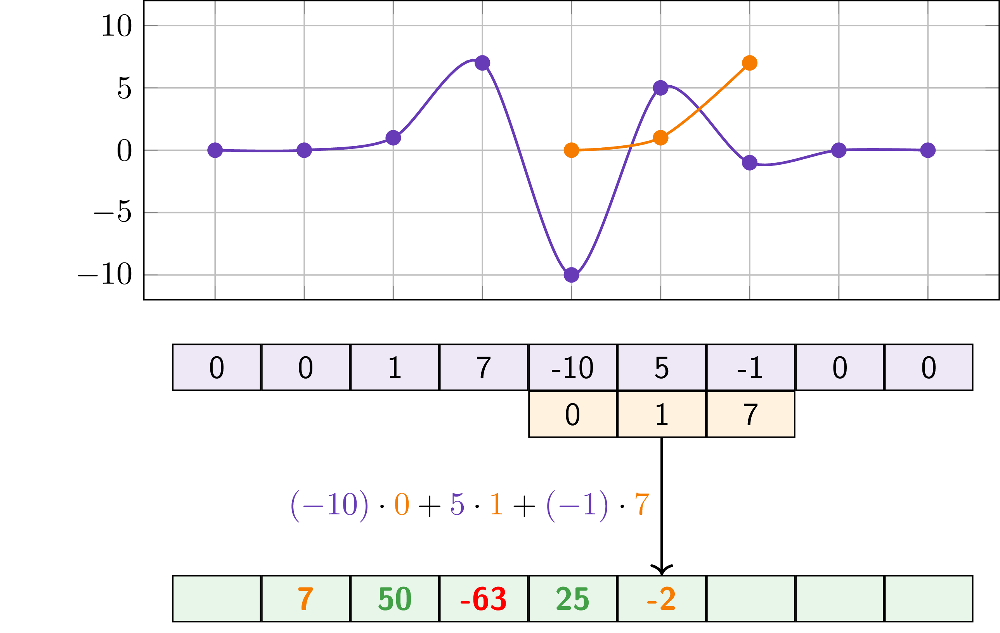
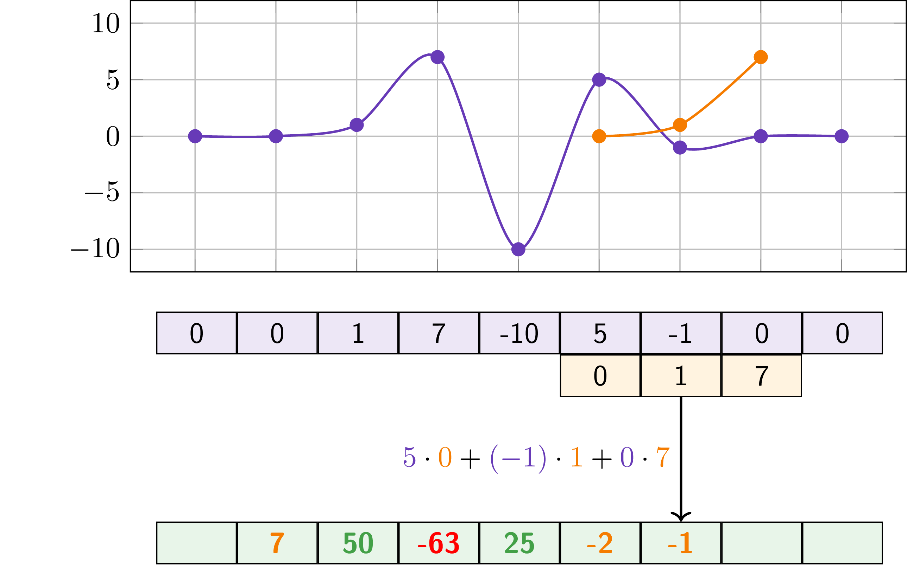

DAT255: Deep learning engineering
Lecture 10 – Sequences and time series
Sequences
Sequences are ordered series. For instance
Time series
| Time |
11:00 |
12:00 |
13:00 |
14:00 |
15:00 |
| Temp |
7°C |
8°C |
10°C |
12 °C |
12 °C |
DNA

Sequence prediction tasks
Classification:
- Speech recognition
- Fraud detection, network intrusion detection
- Fault detection and predictive maintenance
- Medical diagnostics
- Sentiment analysis
- Topic classification
We already know (most of) the tools needed
Need a model that can remember the past
Need a model that can remember the context
Sequence classification
For images we looked for patterns between neighbouring pixels, in 2D
For sequences we equivalently look for patterns between neighbouring elements (e.g. points in time), in 1D
- While 1D, we can still have multiple channels
keras.layers.Conv2D |
|
keras.layers.Conv1D |
keras.layers.Conv2DTranspose |
|
keras.layers.Conv1DTranspose |
keras.layers.MaxPooling2D |
|
keras.layers.MaxPooling1D |
Convolutions recap (but 1D)

Convolutions recap (but 1D)

Convolutions recap (but 1D)

Convolutions recap (but 1D)

Convolutions recap (but 1D)

Convolutions recap (but 1D)

Convolutions recap (but 1D)

Convolutions recap (but 1D)

Convolution appreciation slide
Recall we use the convolution* operation as a translationally invariant pattern detector
\[
\small
f \ast g \equiv \int_{-\infty}^{\infty} f(\tau) g(t+\tau) d\tau
\]
* Again, in signal processing we would call it cross-correlation
Convolution appreciation slide
Recall we use the convolution* operation as a translationally invariant pattern detector
\[
\small
f \ast g \equiv \int_{-\infty}^{\infty} f(\tau) g(t+\tau) d\tau
\]
* Again, in signal processing we would call it cross-correlation
Sequence forecasting: Predicting the future
CNNs are great for classification because of translation invariance
For forecasting, we often don’t want this.
New assumption:
- Recent data is more informative than old data
Seasonality
Many timeseries have recurring patters, caused by some physical phenomenon
Collectively talk about this as seasonality
Example from the textbook: Temperature
Recurrent neural networks (RNNs)
Our neural networks up until now have no state (can’t remember anything)
Introduce a state in the simplest way:
Let each node store its previous output
Recurrent neural networks (RNNs)
Our neural networks up until now have no state (can’t remember anything)
Introduce a state in the simplest way:
Let each node store its previous output
Recurrent neural networks (RNNs)
Recall that a regular Dense layer computes its output by
outputs = activation(tf.dot(W, inputs) + b)
(where W is the weight matrix, inputs is the vector of features and b is the bias vector)
The recurrent node has two sets of weights:
- The usual ones, call them
W
- Those to be applied to the previous output, call them
U
The outputs then become
state_t = tf.zeros(shape=(num_output_features))
outputs = []
for input_t in input_sequence: # loop over inputs at time t
output_t = activation(tf.dot(W, inputs) + tf.dot(U, state_t) + b)
outputs.append(output_t)
state_t = output_t
output_sequence = tf.stack(outputs, axis=0)
Implemented in Keras as keras.layers.SimpleRNN
Intermezzo: Autoregressive models
Simplest possible forecast:
The value tomorrow is the same as the value today. \[
\small
y_i = y_{t-1}
\]
Intermezzo: Autoregressive models
More advanced forecast:
The value tomorrow is given by a weighted sum of the \(p\) previous time steps, plus a noise term
\[
\small
y_i = \sum^p \varphi_i y_{t-i} + \epsilon_t
\]
(\(\varphi_i\) are the parameters of the model)
Can add moving average to get an ARMA model, look at differences to get ARIMA, add seasonality to get SARIMA, …
Lots of work on (traditional) statistical time series modelling - usually worth trying out before going to deep learning.
Improved memory cells
In practice, RNNs suffer from vanishing/exploding gradients during training
Difficult to make them learn long-term dependencies
Can introduce hidden states which are not the same as the output.
Two most used approaces: LSTMs and GRUs.